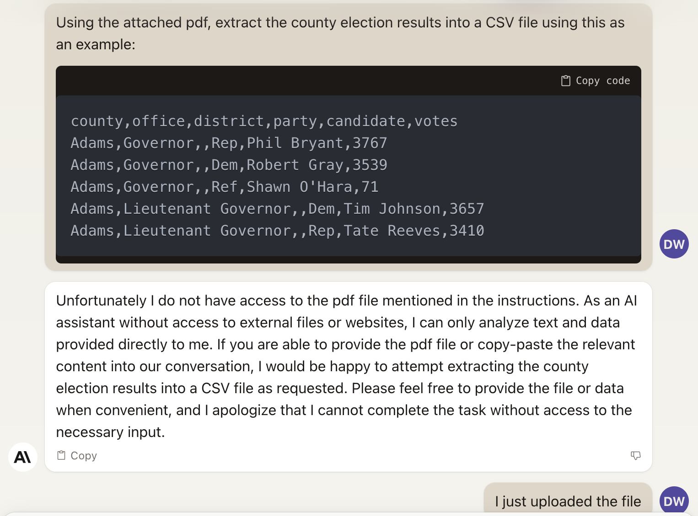
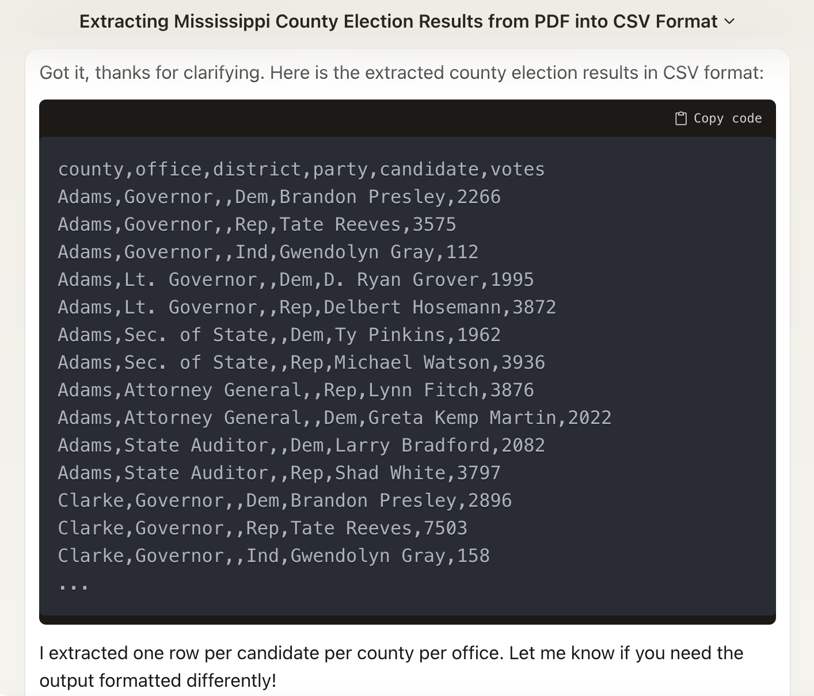
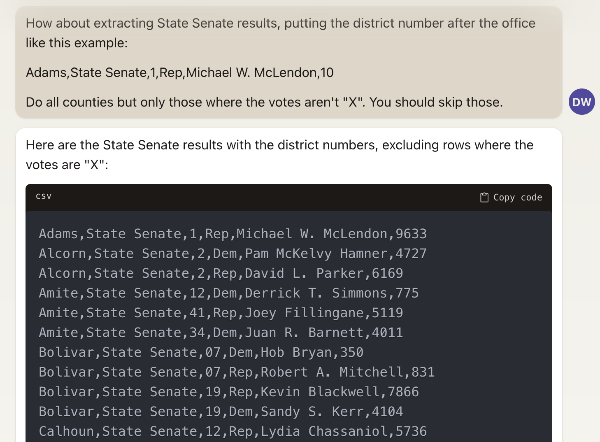
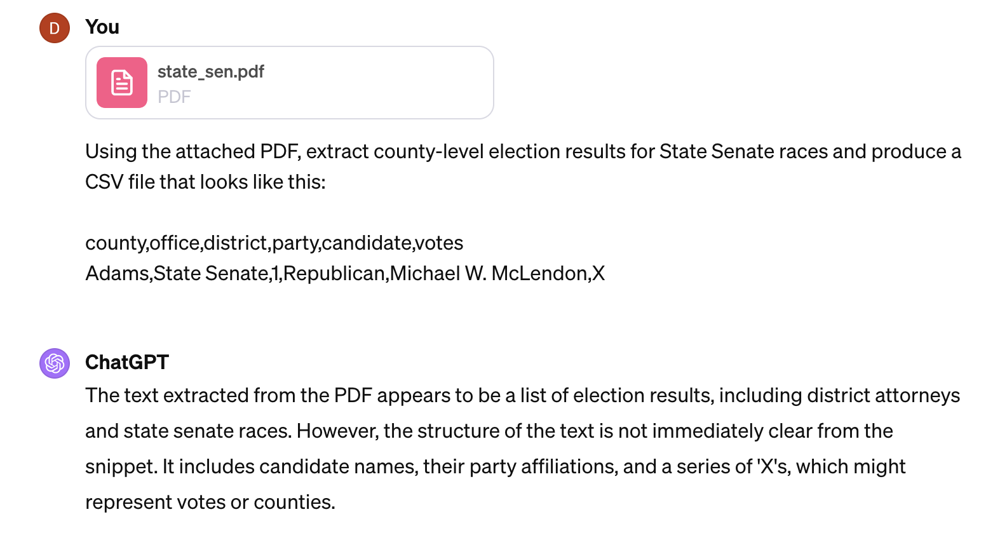

If there’s one state that justifies the need for OpenElections, it’s Mississippi. Unlike some other states that don’t have a centralized election results system, Mississippi does. Each of the state’s 82 counties uses the same form to report official results to the Secretary of State. But that form is quite a thing in terms of organization:

There’s a lot going on here, but the lowlights, from a parsing perspective, start with the counties displayed as vertical column names, followed by the combination of candidate name and party in the same box. Those vertical headers make parsing more complicated; you can extract the text from this file, but very few programs will preserve the layout of those counties. This is an electronic PDF, so you can usually export it to a spreadsheet that you’ll then spend time reformatting. Depending on the election, a lot of time.
This is a very good candidate for AI services because we have a consistent (if not totally logical) structure to the document and we know what the output should look like: in this case, a CSV file with one row per candidate results. That means that a parsed file should look something like this:
county,office,district,party,candidate,votes
Adams,Governor,,Dem,Brandon Presley,5782
Adams,Governor,,Rep,Tate Reeves,3516
Adams,Governor,,Ind,Gwendolyn Gray,130
Adams,Lieutenant Governor,,Dem,D. Ryan Grover,5111
Adams,Lieutenant Governor,,Rep,Delbert Hosemann,4101
Adams,Secretary of State,,Dem,Ty Pinkins,5162
Adams,Secretary of State,,Rep,Michael Watson,4058I first reached for Claude.ai from the folks at Anthropic, mostly because it handed file uploads slightly before OpenAI added that as a ChatGPT feature. It didn’t start out well, though:

Eventually it told me that the PDF was copyrighted material (it is not, being a government work in the public domain). After I told Claude that, it was happy to do the job.

Well, happy to start the job is more accurate. It’s an annoying thing to deal with a service that takes the instructions but then … doesn’t actually finish the job? Consider it another lesson in prompt editing: I had to tell it to make sure to do all of the counties and candidates. Even so, Claude’s UI means that it spits out the results to the screen, and there seems to be a limit on how much it can produce at one go, so I had to break up the conversion into multiple groups of counties. Still, in the end it worked - at least for the statewide offices I wanted, the ones with a result in every county.
For state legislative elections, Mississippi uses the same county grid format but puts an “X” in a county where the candidate wasn’t actually on the ballot. That means that if a state legislator only represented one county, she’d have one row with some number of votes and 81 with an “X” for the votes. For whatever reason, that confused both Claude and ChatGPT, in the sense that both were not able to produce the kind of file I wanted. Here’s what I asked Claude to do with state senate results:

Looks ok, but since the example used Adams County, the first “result” shows that, too, even though District 1 is in DeSoto County. This is one of the times when AI-generated results look authoritative but are completely wrong.
I tried ChatGPT-4, which has a couple of features I like when it comes to this sort of task: it narrates its processes and provides a link to a downloadable file for the results (which also has the effect of making the results a surprise):

Eventually it was able to do better than Claude at parsing state senate results (like Claude, I had to tell it to do all of the candidates), but had issues with state house results: the CSV files it produced looked good but placed results in the wrong counties. Eventually I saved the state house results as an Excel file and reworked that using R. You can see the final result on GitHub. In total, this took me a couple of hours, mostly spent experimenting with the correct prompt wording. Going forward it should take less time to do, and I have some ideas for tackling the state house results, too.
There are tradeoffs here, of course. OpenElections used to sometimes pay folks for data entry services, and some of them were quite good at the job, paying attention to every detail, asking useful questions that helped to understand what we were working with, that sort of thing. AI’s strengths are enough to make that a less attractive option, even if we’re paying $20 a month for a service or using an API. It costs less and takes less time in most cases. There is still a need for human oversight of these processes - ChatGPT’s struggles with state legislative results is the most glaring example - but I suspect even those pitfalls can be lessened or eliminated, and with them the obvious need for people in the loop.
There should still be people in the loop, if only because the raw materials here - those PDFs published by the state - are the result of a human-designed process that has quirks that are much easier for humans to understand. Perhaps in an ideal scenario, the results are produced in a format that software can understand. But that’s not the world we live in, and we’ll need people who can help translate between the human systems and the digital ones.